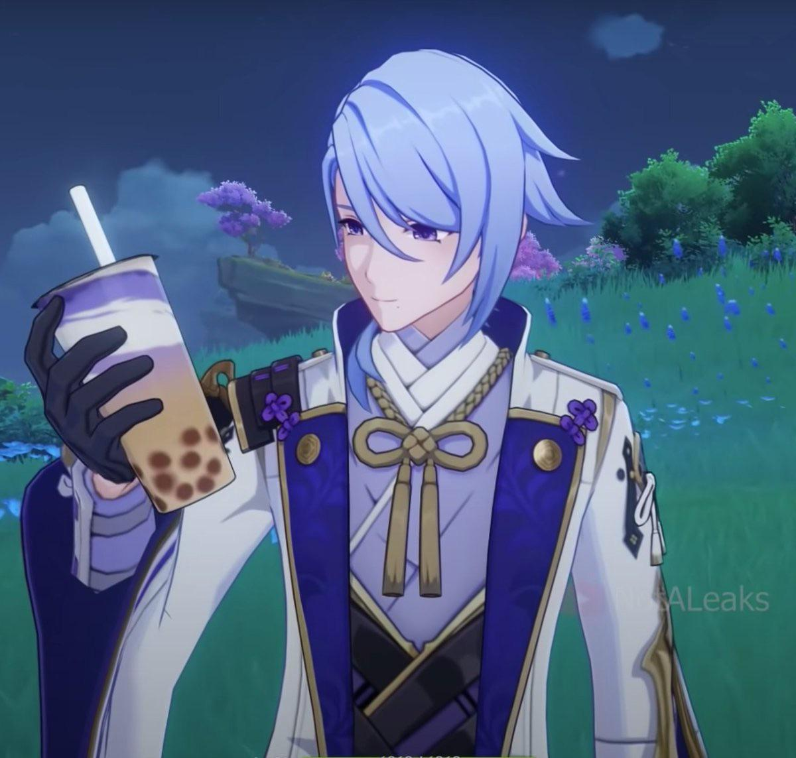

Going about designing this project, I had a lot of troubles trying to figure out how to make this work. When I first started designing this. I was designing with no purpose for it.

I then went into miro to outline what type of ideas I wanted. Originally before I focused on making it boba pearls going into the cup, I was trying to mimic how the different shapes would attribute to the actions inside. I first started with a duck and then a radish and after many iterations created and turned it into a boba cup. It took a lot of iterations to make the boba cup look like a boba cup with introducing vertices and many forms of looks and how many boba pearls should be included inside the cup. Once the cup was completed, I wanted to make sure that immediately the cup cursor hits a boba pearl, I wanted it to shake. The shake may be a bit violent but I wanted it to look like it was shaking to create the effect of shaking the drink. I then added this effect to the screen by making the screen shake as well.
After getting those to work, it was about putting the stuff on the screen and creating the effects. I had to create a separate class for balls so that they can move around and hit the sides of the canvas and bounce off. The next step was introducing the counter and saving the best history. The special effects was the hardest part. Creating different classes to create different effects depending on what is being shown on the screen changes how it would react. I looked up different explosions and impactors and in the end added them all together to create the effect of collisions.
After rounding it all off, it was finishing the final visual effects and coloring. I made the color blue purple or periwinkle to add to the effect of the character I was mimicing called Ayato and then made the cursor into a boba cup. Originally the cursor created was just a circle colliding with the different boba pearls but in the end I decided to copy the code and make the cursor also a boba cup. I had it interact with the boba pearls and also shake and made it a different color to showcase its a different item.
It was finally complete. It took a lot of iteration and finalizing but after all the clean ups and changes, the game of hitting the boba pearls away from the white boba cup was completed. Ayato hopefully is happy with this.
